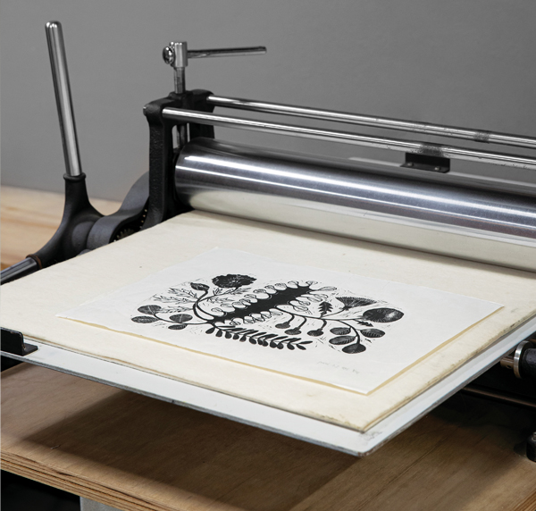

Class&Tour
-

파이브콤마의 매트 직조 수업
직조의 원리와 방법을 배우고, 작은 매트(직물)를 직접 만드는 시간입니다.
2021.06.22 ~ 08.10 -

이양지 선생님의 마크로비오틱 요리 수업
한국식 마크로비오틱 가정 요리를 배우는 시간입니다.
2021.06.22~07.30 -

마이알레의 작은 정원 만들기
마이알레가 제작한 트레이 위에 다양한 식물과 화분, 가드닝 소품, 오브제, 이끼, 돌 등을 배치해 미니 정원을 만드는 시간입니다.
2021.06.22~08.18 -

홍지희 작가와 함께하는 드로잉
새로운 작업실에서 다양한 재료를 활용해 거울에 비친 나를 그립니다.
2021.06.22~08.11 -
이외희 선생님과 함께하는 전통 간세 인형 만들기
한복 옷감을 활용하여 귀여운 간세 인형을 만드는 시간입니다.
2021.05.24~07.09 -

정원놀이와 함께하는 코케다마 볼 만들기
이끼나 수태 등을 활용해 화분 없이 식물을 재배하는 방법을 배웁니다
2021.05.24~07.14 -

네베르스로이드로 작은 가방 또는 바스켓 만들기
'네베르스로이드’로 작은 미니 가방또는 바스켓을 만드는 시간입니다.
2021.05.24~07.07 -

로우크래프트의 타원형 볼 만들기
손으로만 만들 수 있는 자연스러운 미감의 타원형 볼을 2개 만드는 시간입니다.
2021.05.24~07.12